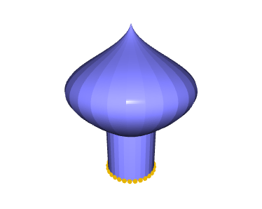

お寺や神社、橋の欄干などで見られる玉ねぎ型の装飾は、「宝珠（ほうじゅ）」、または「擬宝珠（ぎぼし）」と呼ばれる。

ルコビッツァ
ロシアの建築物に見られる玉ねぎ型のドームは、ロシア語でルコビッツァ（lukovitsa / луковица）と呼ばれる。 ロシア語でドーム全般を指す「クーポル（kupol / купол）」とも呼ばれる。 https://www.chenarch.com/Lecture-07.html